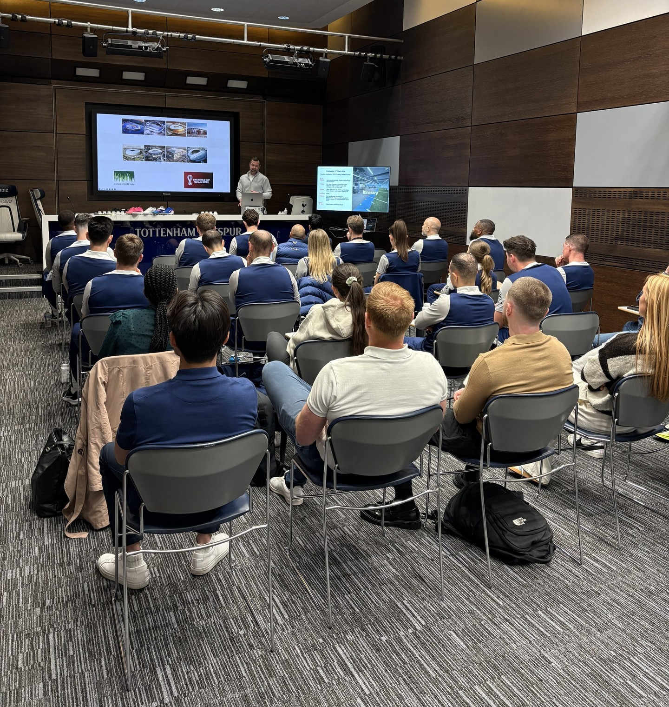
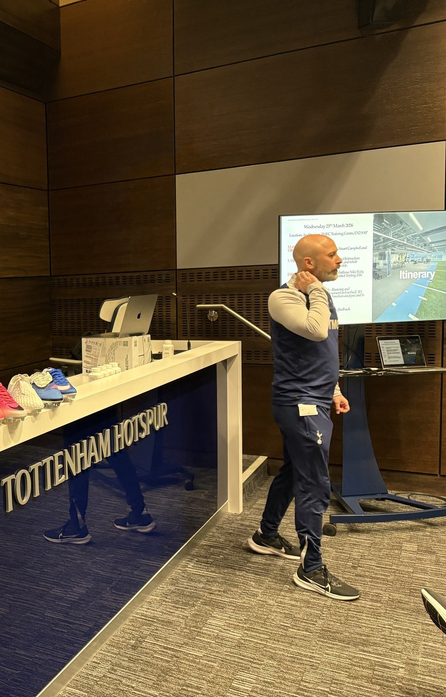
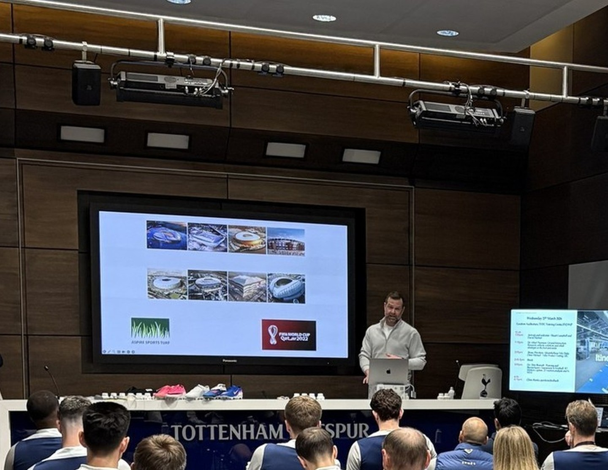
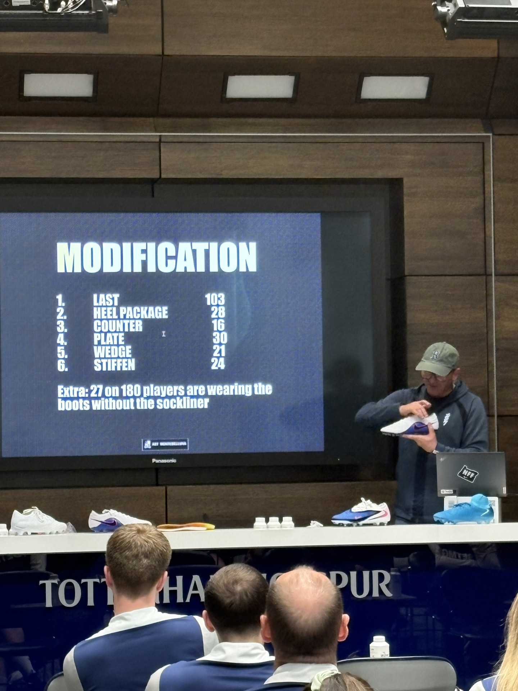
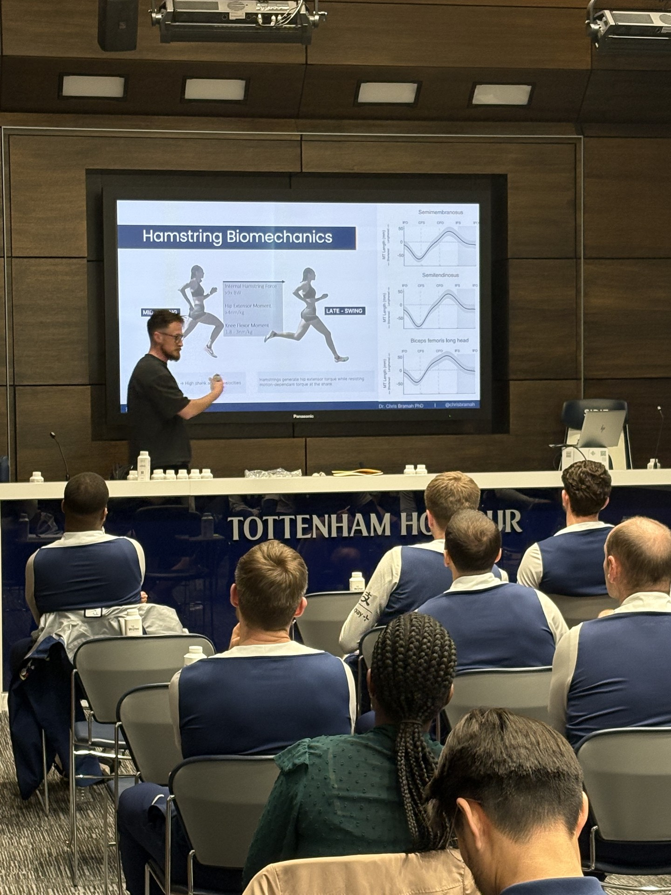
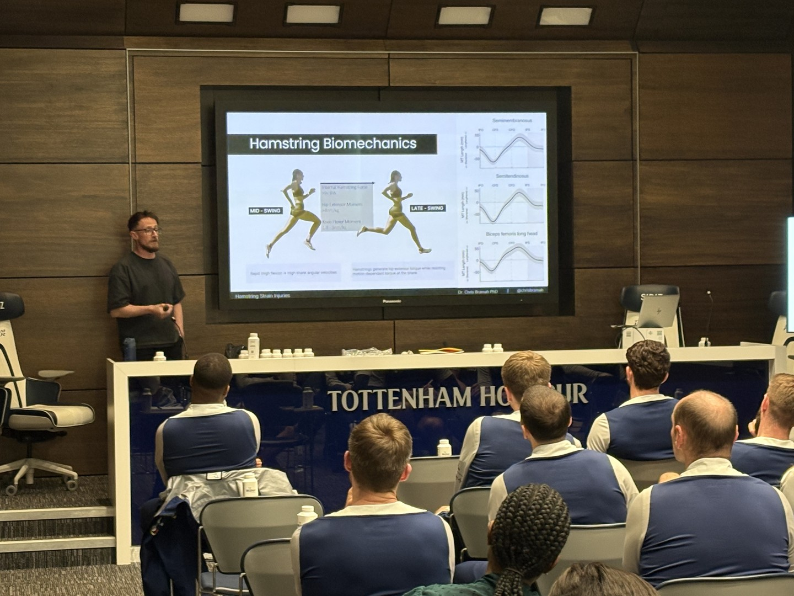

Club medical and performance staff face a demanding, year-round schedule. There is rarely time to step away from the team to pursue development opportunities. Conferences happen in the off-season. Courses require travel. The reality is that most of these staff are always on.
Nike Sports Marketing Manager Jason Purewal contacted the London NSRL to see if we could help. The idea was simple: instead of asking club staff to come to us, we go to them. Bring leading speakers from our network directly to the training ground.
The result was the first Tottenham x Nike Innovation and Performance Summit — a half-day event at Spurs' training centre covering ground interaction research, global football product development, and high-speed running biomechanics.
Twenty-six staff from Tottenham's men's, women's, and academy teams attended, along with five staff from clubs where Spurs players are on loan.
Attendees included physiotherapists, strength and conditioning coaches, doctors, osteopaths, and sports scientists — the staff who work directly with players every day but rarely get access to development events during the season.



From a roster of 180 players (130 men, 50 women), the Montebelluna team has built an extraordinary dataset of what elite footballers actually need from their boots. The numbers tell the story:
27 of 180 players wear their boots without the sockliner — a simple preference that affects fit, feel, and ground contact.
The session gave club staff direct insight into the available modifications and solutions for different injury mechanisms affecting the foot and ankle. Plate options — SG, FG, and AG — were broken down alongside commonly requested adjustments: carbon fiber stiffening, heel counter options, and last manipulations.
Several staff noted they had only considered SG and FG plates previously. The AG option is particularly useful for academy teams spending more time on artificial surfaces.


Various studies have referenced 85% of peak speed as the required intensity to simulate the eccentric demand of match play. Below this, the assessment doesn't represent the injury mechanism. This has direct implications for return-to-play testing protocols.
"Great to involve all areas of the club and allowed the opportunity to connect with staff members that I hadn't met before, stimulating conversations between staff and between teams."
"On the boot plates alone, I previously only considered the two main types of SG and FG and wasn't as familiar with the AG. This is a useful option, especially for academy teams that have more time on artificial surfaces."
"As a medical team we routinely have conversations with ground staff around surface conditions at the training ground and stadium, but the information isn't passed on to players. This is something we will consider sharing based on the research and information."
"After the summit I was able to connect directly with club staff at Tottenham regarding testing opportunities with the academy and younger age group teams. Previously we have had limited interactions with these teams."
Don't wait for them to come to you. Go to them.
Club staff don't have time to attend conferences during the season. They can't leave the team for a week to visit a research lab. But give them a half-day at their own training ground, with speakers who understand their world, and the room fills up.
Thirty-one people showed up. Staff connected across teams — men's, women's, and academy — in ways they hadn't before. New testing relationships were formed on the spot. Information that had been siloed within medical teams was identified as something worth sharing with players directly.
This is the model. Bring the development to the club. Make it easy to say yes.
Hannah Hampton visited the London NSRL for a Footscan — and surfaced a product problem that set a prototype in motion. Another story from the London Lab.